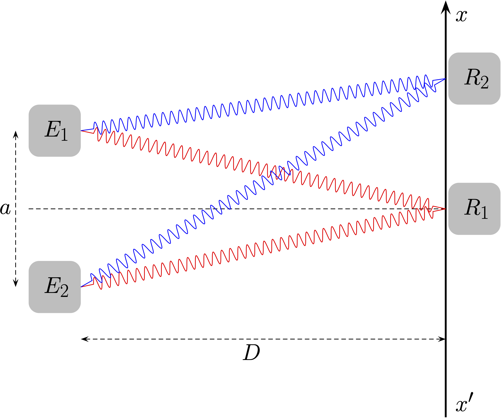
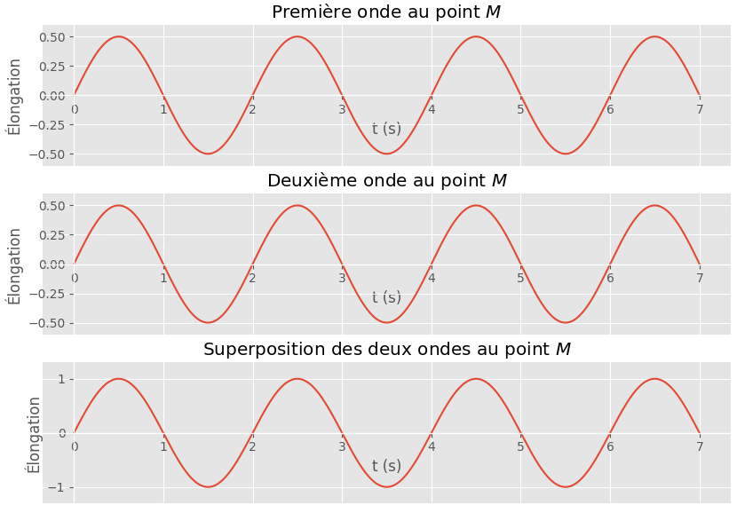
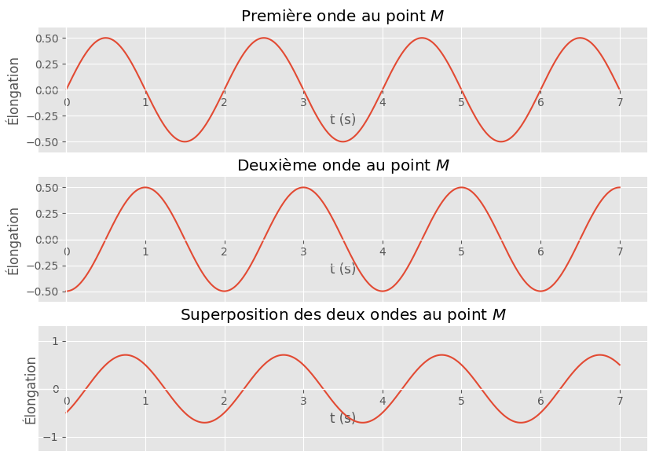
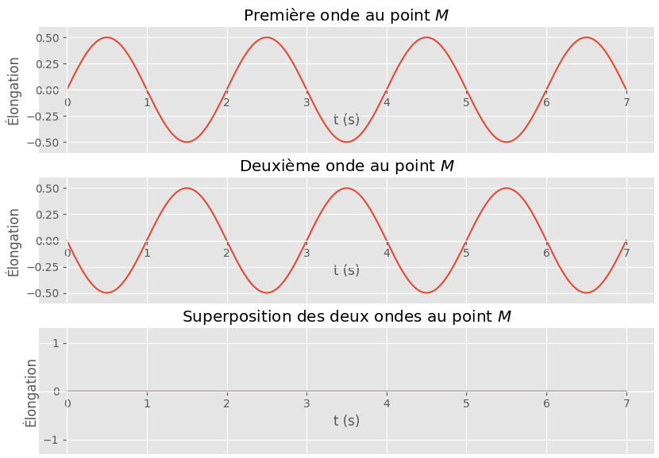
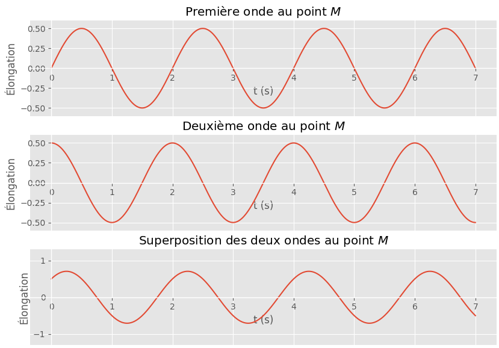
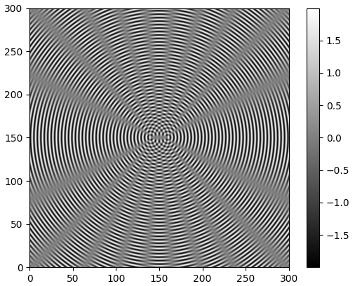

Émission de bips sonores par deux émétteurs

- Deux émetteurs synchronisés, $E_1$ et $E_2$, émettent chacun un bip sonore, à la date $t=\pu{0 s}$ alors qu’un récepteur $R$ se trouve à la position $R_1$.
Combien de bips perçoit le récepteur ? Pourquoi ?
Réponse
 Le récepteur perçoit un seul bip puisque les deux signaux doivent parcourir la même distance à la même vitesse (car ils se propagent dans le même milieu) et arrivent donc à la même date.
Le récepteur perçoit un seul bip puisque les deux signaux doivent parcourir la même distance à la même vitesse (car ils se propagent dans le même milieu) et arrivent donc à la même date.
- On place cette fois le récepteur à la position $R_2$. Que perçoit le récepteur dans ce cas ? Pourquoi ?
Réponse
Le signal issu de l’émetteur $E_1$ doit parcourir une plus petite distance que le signal issu de l’émetteur $E_2$ (ces signaux se propagent avec la même célérité puisqu’ils sont dans le même milieu).
Le récepteur perçoit donc deux signaux : celui issu de $E_1$ puis celui issu de $E_2$.
- Si on note $t_1$ la date à laquelle le récepteur positionné en $R_2$ reçoit le signal issu de $E_1$ et $t_2$ la date à laquelle ce même récepteur reçoit le signal issu de $E_2$, établir l’expression du retard $\tau$ avec lequel le deuxième signal arrive par rapport au premier.
Réponse
Puisque les deux signaux ont quitté les émetteurs à la même date, $\tau = t_2 - t_1$.
- Exprimer le retard précédent en fonction de la célérité $v$ des ondes, la distance $E_1R_2$ et la distance $E_2R_2$.
Réponse
- Le premier signal parcourt la distance $E_1R_2$ à la célérité $v$, donc $t_1 = \dfrac{E_1R_2}{v}$.
- Le second signal parcourt la distance $E_2R_2$ à la célérité $v$, donc $t_2 = \dfrac{E_2R_2}{v}$.
- On en déduit que $\tau = \dfrac{E_2R_2}{v} - \dfrac{E_1R_2}{v} = \dfrac{E_2R_2 - E_1R_2}{v}$.
On appelle différence de marche $\delta$ en un point $M$ quelconque de l’espace la différence entre les distances parcourues par deux ondes, depuis leur lieu d’émission jusqu’à ce point.
- Exprimer le retard $\tau$, au point $R_2$, du signal issu de $E_2$ par rapport au signal issu de $E_1$ en fonction de la différence de marche.
Réponse
- La différence de marche $\delta$ est la différence entre les distances parcourues par les signaux issus de $E_2$ et de $E_1$ jusqu’au point $R_2$, donc $\delta = E_2R_2 - E_1R_2$.
- On en déduit que $\tau = \dfrac{\delta}{v}$.
En conclusion
- On appelle différence de marche $\delta$ en un point $M$ quelconque de l’espace la différence entre les distances parcourues par deux ondes, depuis leur lieu d’émission jusqu’à ce point.
- Le retard en un point d’une des deux ondes par rapport à l’autre peut alors s’écrire $$ \tau = \dfrac{\delta}{v} $$ où $v$ est la célérité de l’onde.
- La différence de marche dépend de la géométrie du montage. Son expression doit être déterminée par analyse du montage.
- $\delta$ est une grandeur algébrique mais on a tendance à privilégier sa valeur absolue lors de l’analyse des problèmes.
Émission de deux sinusoïdales de même fréquence

Les deux émetteurs $E_1$ et $E_2$ émettent maintenant deux ondes sinusoïdales de même fréquence $f$.
On déplace le récepteur $R$ selon l’axe $(x’x)$ et on observe le résultat de la superposition des ondes.
En utilisant le programme à cette adresse :
Simulation
on a mis en évidence les quatres situations ci-dessous
Pour chacune d’elles,
- Déterminer le retard $\tau$ de l’onde 2 par rapport à l’onde 1, en fonction de la période temporelle $T$.
- En déduire la différence de marche de l’onde 2 par rapport à l’onde 1, en fonction de la longueur d’onde $\lambda$.
- Donner les caractéristiques de la superposition (addition) des deux ondes.
Situation 1

Réponse
-
Le décalage dans le temps entre l’onde 1 et 2 est : $\Delta t = 0 + p T$ où $p$ est un entier nul ou positif. Les deux ondes sont en phase.
-
La différence de marche est donc $\delta = p \lambda$. L’onde 2 a parcouru une distance, en plus ou en moins par rapport à l’onde 1, égale à un multiple entier de $\lambda$.
-
L’amplitude de la somme des élongations est égale à la somme des amplitudes des deux ondes.
Situation 2

Réponse
- Le décalage dans le temps entre l’onde 1 et 2 est : $\Delta t = T/4 + p T = (4p + 1) T/4 $ où $p$ est un entier nul ou positif. Les deux ondes ne sont plus en phase.
- La différence de marche est donc $\delta = (4p + 1) \lambda / 4$.
- L’amplitude de la somme des élongations n’est pas égale à la somme des amplitudes des deux ondes.
Situation 3

Réponse
- Le décalage dans le temps entre l’onde 1 et 2 est : $\Delta t = T/2 + p T = (2p + 1) T/2 $ où $p$ est un entier nul ou positif. Les deux ondes sont en opposition de phase.
- La différence de marche est donc $\delta = (2p + 1) \lambda / 2$. L’onde 2 a parcouru une distance, en plus ou en moins par rapport à l’onde 1, égale à un multiple impair de fois $\lambda / 2$.
- L’amplitude de la somme des élongations est nulle.
Situation 4

Réponse
- Le décalage dans le temps entre l’onde 1 et 2 est : $\Delta t = 3T/4 + p T = (4p + 3) T/4 $ où $p$ est un entier nul ou positif. Les deux ondes ne sont pas en phase.
- La différence de marche est donc $\delta = (4p + 3) \lambda / 4$.
- L’amplitude de la somme des élongations n’est égale à la somme des amplitudes des deux ondes.
Cette situation est identique à la deuxième.
Application : superposition d’ondes sinusoïdales de même fréquence à la surface de l’eau
Le programme accessible à cette adresse Simulation simule la propagation d’ondes sinusoïdales, créées par deux sources vibrant à la même fréquence $f$, à la surface de l’eau.
- Expliquer la forme de la surface de l’eau.
Réponse

Si on consulte la légende à droite de la simulation, on se rend compte que certaines zones, à la surface de l’eau ont une élongation (élévation au dessus ou en dessous de l’eau nulle). À cet endroit, la superposition des ondes conduit à une élongation nulle, on peut donc en conclure que pour tous ces points la différence de marche $\delta = S_2M - S_1M$est égale à un multiple entier de la longueur d’onde des ondes synchrones.
- Repérer les lignes, dans le code Python, où les distance $S_1M$ et $S_2M$ sont calculées.
Réponse
- Ligne 23 :
r1 = np.sqrt((X - x1)**2 + (Y - y1)**2); - Ligne 24 :
r2 = np.sqrt((X - x2)**2 + (Y - y2)**2).
- Repérer la ligne, dans le code Python, qui calcule la superposition des deux ondes en chaque point de l’espace.
Réponse
- Ligne 26 :
return a0 * np.sin(k * r1) + a0 * np.sin(k * r2).